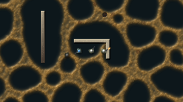
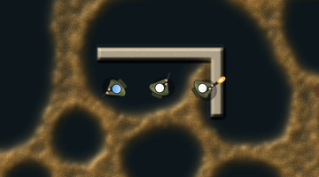
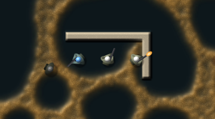
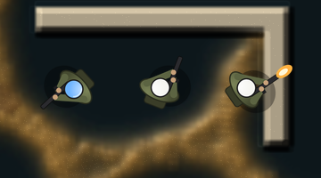
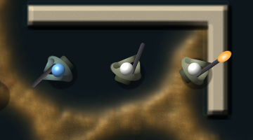

The world drawn from the simulation
Everything below is one 2048 × 1280 world with 400,000 walkers, 10 seconds in, seed 1, then 2 seconds of a squad firing into the mould. The mould's look comes from its own fields: thickness sets height, gloss and colour strength, every walker is a speck at its real position, and a shot cuts the trail in the engine and leaves a burn the size of what it destroyed. Walls stand as tall as their health, and crystals as tall as their charge. Soldiers are drawn in the shader, with no sprite.
Rendered on the software GPU in the cloud. Timing on the GTX 1070 is waiting on free disk space on that PC.
Before and after
The same frame both ways. Left is the look on. Right is the view as it was: the engine's colour frame, nearest-sampled, with soldiers as discs.


Shots that cut the mould

Which soldier reads better?
Two ways to draw the same top-down rifleman over the same ground, at zoom 1, 2 and 4: one blue enemy, one idle, one firing. Which looks more like a soldier, and which sits better in the world?





At zoom 1 a soldier is 14 pixels across, and neither reads as more than a dot with a gun. From zoom 2 both do.
What draws what
| On screen | Comes from | Where |
|---|---|---|
| Mould colour, height and gloss | Trail brightness a cell (the same number as the colour ramp) | engine look field, byte 0 |
| Specks | Every walker at its real position, a speck each | engine walkers |
| Burns | Thickness a hit removed, fading in the engine | engine look field, byte 2 |
| Ground tint | Scent, species, germ and grass, as the engine colours them | engine frame |
| Walls | Height and brightness from health | ground field, kind 3 |
| Crystals | Height, glow and brightness from charge; shape from depth inside | ground field, kind 5 |
| Rock, wet ground | Terrain kinds | ground field, kinds 2 and 1 |
| Soldier pose | Position, facing, team, alive or dead | game marks |
| Tracer and flash | A shot's line and its timer (0.09 s, 0.07 s) | game marks |
The ground field (a kind and a value a cell) is what the Larder world fills from its own walls, health and crystal charge. In this test the walls are cells taken off the agar, so the mould really cannot cross them. The tall wall on the left has its health set by hand from full at the top to empty at the bottom, only to show the range.
Cost and what is next
- Frame cost of the view pass on the software GPU at 1280 × 800: 31.5, 33.3 and 31.5 ms with the look at zoom 1, 2 and 4, against 13.5, 14.8 and 15.5 ms without, so about 2.2 times. The software GPU is far slower than a real card. On the GTX 1070 the plain view was 0.33 ms at 1920 × 1080, and its look numbers come next, once its drive has room.
- Walls wearing down, crystals draining and walkers starving come in as the Larder world and growth reach the GPU. The view already reads them.
- Sandbox:
cargo run --release --bin mouldgpu, then W for the big world, Q for a squad, and L to switch the look.